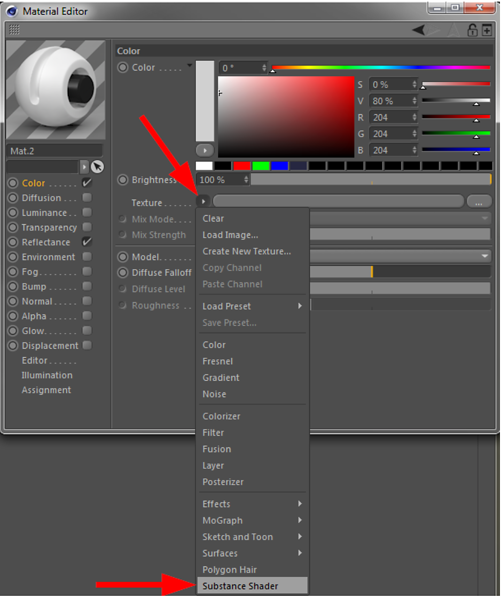
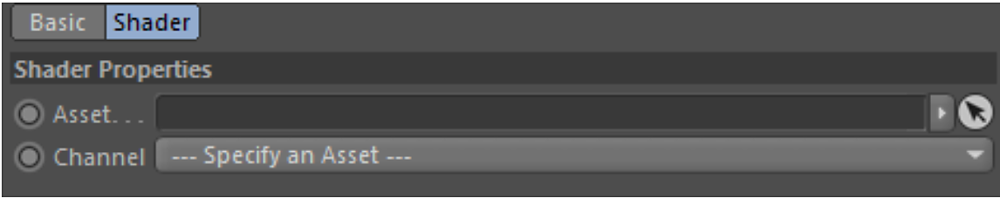

Substance Shader
A Substance shader is the link between a Substance asset and a Cinema 4D material.
The Substance shader can be found in the normal Cinema 4D Material Editor selection menu, as shown in the screenshot below:

After manually adding a Substance shader, it has no linked Substance asset. It will look like below and when rendered, the material will look like the image on the right:

To access the parameters of the Substance shader, you can either click the small arrow on the top left, or on the shader's preview image.

Parameters
The Substance shader has two parameters:
- Asset: Here you can drop a Substance Asset from the Substance Asset Manager in order to link it to the shader. In other words, it will link a Substance asset to a Cinema 4D material channel.
- Channel: Select the output channel of the linked Substance.